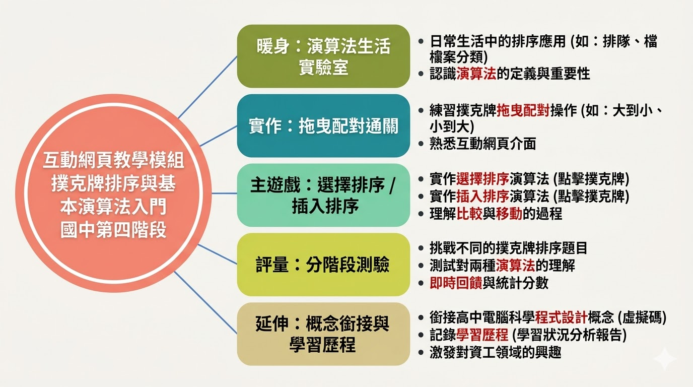

| 課程目標 | 讓學生了解演算法的重要性，並認識兩個入門排序演算法：選擇排序與插入排序；同時以氣泡排序作為比較理解。 |
|---|---|
| 主要教學策略 | 以「操作先行、概念對照、回饋校正」為核心：先讓學生做得到，再把做法對應到概念，最後透過回饋修正理解。 |
| 第一節重點 | 在「演算法生活實驗室」建立輸入—步驟—輸出之直覺；透過拖曳通關把流程觀念看見並可被檢核，並引導理解：不同方法可能有不同成本/效能，需能比較與選擇。 |
| 第二節重點 | 遷移到「排序遊戲」：教師示範選擇排序與插入排序基本操作；學生依指定排序法完成任務，同時練習說出「我為什麼要做這一步」與「這一步想達到什麼」。並安排氣泡排序短時體驗作為比較理解；搭配分階段測驗與評量證明回饋理解，並可將通關/測驗截圖上傳 Padlet，強化形成性評量的紀錄性。 |
| 備用課程（選用） | 若學生程度好、進度快或有剩餘時間，可選用「備用課程：演算法中的結構」。在累積比較、重複與檢查經驗後，進一步理解循序、迴圈與邏輯判斷的對應，並完成「結構小測驗（10 題）」（選用）。 |

| 教學模組名稱 | AI時代之排序演算法教學新嘗試 |
|---|---|
| 主題科目 | 國中資訊科技 |
| 議題／領域 | 科技領域 |
| 學習階段／年級 | 八年級 |
| 教學時數 | 核心安排共 2 節、約 90 分鐘（實驗室與遊戲／測驗）；若學生程度好、進度快，可選用備用課程約 45
分鐘，實施「循序、迴圈、邏輯判斷」課程。
注意事項：本教案內容較多，請務必依學生程度取捨教材，不必全部使用。
|
| 數位工具／平臺 | 自製遊戲教學平台、Padlet |
| 教學設備 | 個人電腦、電腦教室 |
| 學習目標 | 希望學生透過實際操作演算法與實際練習，學習演算法的概念，並透過撲克牌遊戲認識選擇排序法與插入排序法；同時以氣泡排序作為比較理解，從反覆練習與試題測驗中學會兩種演算法的差異，並了解演算法的重要性與成本/效能思維。 |
| 與課程綱要的對應 | 課綱條目（編號與敘述） | 本模組之教學對應說明 |
|---|---|---|
| 核心素養 |
科-J-A2 運用科技工具，理解與歸納問題，進而提出簡易的解決之道。 |
學生使用自製網頁平臺，在拖曳流程、撲克牌排序與測驗中，將「如何把資料排成目標順序」歸納為可比較、可交換或可插入的具體步驟，並依規則檢核結果，形成可操作的解題路徑。 |
|
科-J-A3 利用科技資源，擬定與執行科技專題活動。 |
兩節核心課以「認識演算法→排序遊戲實作→學習評量」為主軸；若選用備用課程，則銜接「演算法中的結構」教材與本章小測驗，使「結構化思考」獲得獨立深化時間。全程可搭配 Padlet 蒐集通關／評量／結構測驗截圖與心得，具備小型專題之規劃、執行與成果紀錄內涵。 |
|
| 學習表現 |
運 t-IV-1 能使用程式設計實現運算思維的問題解決方法。 |
本模組以互動操作具現「分解、規律化、檢查」等運算思維歷程，作為銜接程式設計的前置經驗。若校本課程於後續單元安排以程式實作排序或類似流程，可直接呼應本條「以程式實現問題解決」之要求。 |
|
運 a-IV-3 能樂於探索新興的資訊科技。 |
平臺採瀏覽器即開即用、即時回饋與多頁式學習動線，鼓勵學生主動嘗試介面操作與題組，在遊戲化情境中建立探索資訊科技的正向經驗。 |
|
| 學習內容 |
資 P-IV-2 結構化程式設計。 |
透過「演算法中的結構」延伸材料與遊戲中「每一輪重複同類步驟、依條件決定下一步」的操作，對應循序、迴圈與判斷等結構化思考；可搭配口語或圖示流程，為日後語法層次之結構化程式設計打底。 |
|
資 A-IV-3 基本演算法的介紹。 |
主遊戲與分階段測驗聚焦選擇排序與插入排序之概念與步驟差異，呼應國中「基本演算法的介紹」；若校本於後續單元安排程式實作，可列為延伸，以銜接程式設計實作面向。 |
橫軸為學習內容、縱軸為學習表現；格內為本模組「排序演算法教學」之學習目標。學習內容編號依科技領域第四學習階段（國中）資訊科技：程式設計類之資 P-IV-2、演算法類之資 A-IV-3（見課綱資訊科技學習內容表）。學習表現採運 t-IV-1、運 a-IV-3
| 學習內容 學習表現 | 資 P-IV-2 結構化程式設計。 | 資 A-IV-3 基本演算法的介紹。 |
|---|---|---|
| 運 t-IV-1 能使用程式設計實現運算思維的問題解決方法。 |
運算思維與結構化流程（操作式體驗）
學習目標：
|
運算思維與基本排序演算法
學習目標：
|
| 運 a-IV-3 能樂於探索新興的資訊科技。 |
探索新興科技與結構化學習活動
學習目標：
|
探索新興科技與基本演算法學習
學習目標：
|
| 項次 | 以學習表現作為評量標準 | 對應之學習內容類別 | 具體評量方式 |
|---|---|---|---|
| 1 | 運 t-IV-1 能使用程式設計實現運算思維的問題解決方法。 | 資 P-IV-2 結構化程式設計。 | 學生於演算法生活實驗室完成拖曳流程／邏輯配對通關，並上傳通關截圖至 Padlet（或繳交學習單）；選修可再請學生以口頭或簡圖說明「輸入→步驟→輸出」與循序、判斷、重複如何出現在排序流程中。若校本併行教授程式，可增列：撰寫一小段結構化程式（或虛擬碼）解決簡易排序相關子問題。 |
| 2 | 運 t-IV-1 能使用程式設計實現運算思維的問題解決方法。 | 資 A-IV-3 基本演算法的介紹。 | 學生於主遊戲完成教師指定之選擇排序／插入排序任務（可比較次數、完成檢核），並於同節短時體驗氣泡排序（比較理解）與分階段測驗作答相關題目；請學生口頭或書面簡述兩種演算法「每一輪在做什麼」及與氣泡排序的差異（例如：氣泡排序主要是相鄰比較與交換）。若校本有程式延伸，可增列：以程式實作其中一種排序並口頭說明與遊戲操作之對應。 |
| 3 | 運 a-IV-3 能樂於探索新興的資訊科技。 | 資 P-IV-2 結構化程式設計。 | 學生針對互動網頁學習平臺、即時回饋、學習歷程上傳（Padlet）等型態，完成簡短查詢或心得（例如 3～5 句）：說明一項自己覺得「像本課一樣把步驟想清楚」的數位學習經驗，或一種新工具如何幫助自己理解流程。可併入Padlet 同一看板之文字貼文。 |
| 4 | 運 a-IV-3 能樂於探索新興的資訊科技。 | 資 A-IV-3 基本演算法的介紹。 | 學生舉例生活或資訊應用中與「排序、比較、搜尋」相關的情境（如榜單、資料整理），並說明與課堂兩種排序概念的聯想；或於 Padlet 附上一則遊戲／測驗操作心得，描述自己嘗試了哪些策略、遇到何種困難與如何修正。教師可依態度、參與度與論述合理性給予形成性回饋。 |
| 5 | 運 t-IV-1 能使用程式設計實現運算思維的問題解決方法。 | 資 P-IV-2 結構化程式設計。 | 於備用課程或延伸自學時，學生閱讀 演算法中的結構 後，完成 結構小測驗（十題選擇，頁面可顯示解析）；可截圖得分與解析畫面、或繳交學習單記錄錯題與修正想法。建議於 |
以下先列兩節核心課、合計約 90 分鐘（每節以約 45 分鐘規劃）。若學生程度好、進度快，可選用備用課程（約 45 分鐘），對應「演算法中的結構」與結構小測驗；鐘點、下課或設備若與本校不同，請自行微調。資源連結：演算法生活實驗室、主遊戲、分階段測驗、演算法中的結構、結構小測驗。
| 教學活動（名稱） | 活動內容 | 時間分配 | 評量方式 | 備註（教學注意事項） |
|---|---|---|---|---|
| 課程導入與學習目標 | 說明本模組將透過實驗室與遊戲認識「演算法」與兩種排序；提醒數位禮儀與專心操作。 | 約 5 分鐘 | 課堂參與、口頭回應。 | 可對照架構圖或學習目標一段話；確認學生能開啟瀏覽器與教師公布之 Padlet 連結。 |
| 演算法概念暖身 | 教師舉生活化流程，歸納「輸入 → 步驟 → 輸出」；帶出「比較、重複步驟、檢查結果」與後續排序的關聯。 | 約 8 分鐘 | 口頭詢問、舉例檢核。 | 不必急著出現「選擇排序／插入排序」專有名詞，以免干擾實驗室入門。 |
| 演算法生活實驗室與拖曳通關 | 進入 練習整合頁：教師簡短示範介面後，學生完成前三關拖曳排序／配對（共 9 題）；全數通關後解鎖第四關：顯微鏡定位（含複式顯微鏡與解剖顯微鏡兩種邏輯判斷挑戰）。通關證明仍以前三關拖曳為準，於頁面填寫姓名並顯示通關證明。 | 約 22 分鐘 | 實作檢核（前三關是否通關）、選做第四關操作檢核；通關截圖（上傳 Padlet 或繳交）。 | 巡堂協助卡關學生；提醒先讀題再拖曳。第四關須先過前三關；網路不穩時可預載分頁或依校內規範準備備援方案。 |
| 學習歷程紀錄（Padlet） | 說明看板欄位與檔名習慣；學生上傳通關截圖，可選填一句心得。 | 約 7 分鐘 | 是否完成指定欄位上傳、形成性檢視。 | 依校規決定是否使用座號／暱稱；公開看板注意個資與同儕互動規範。 |
| 第一節小結與下節預告 | 整理「步驟化」經驗並收束成本/效能思維；預告下節將以撲克牌遊戲操作選擇排序與插入排序，並用氣泡排序做短時比較理解。 | 約 3 分鐘 | 口頭檢核重點理解。 | 可請 1～2 位學生用自己的話複述「今天完成了一件什麼任務」。 |
| 教學活動（名稱） | 活動內容 | 時間分配 | 評量方式 | 備註（教學注意事項） |
|---|---|---|---|---|
| 複習與銜接 | 快速回顧上節「輸入—步驟—輸出」與實驗室任務，連結今日主遊戲目標。 | 約 3 分鐘 | 口頭詢問。 | 若上節有未通關者，可約定課後補件或課前 5 分鐘協助。 |
| 主遊戲示範 | 教師於 主遊戲示範選擇排序、插入排序各至少一輪（選牌、交換或插入、檢查）；可對照 教師手冊 · 操作說明。 | 約 7 分鐘 | 觀察學生是否跟上演示節奏。 | 投影解析度與字體確認；示範時邊做邊說出「為什麼這一步」。 |
| 學生操作主遊戲 | 學生依指定排序法（以選擇排序／插入排序為主）完成任務；鼓勵鄰座互相說明「這一步在做什麼」。教師巡堂與抽問。 | 約 8 分鐘 | 操作檢核、口語說明、同儕互動觀察。 | 可依程度限制先練單一排序法；進度快者可試兩種並比較步數或策略。 |
| 泡沫排序短時體驗（比較理解） | 教師引導學生切換到氣泡排序（相鄰比較／交換），完成一次簡短觀察；再請學生口頭說出與選擇/插入排序相比：每一回合主要做什麼不同，以及為什麼它可能較不適合資料量較大。 | 約 5 分鐘 | 形成性口頭回饋；對應分階段測驗新增之泡沫排序與資料量比較題。 | 時間緊可只做 1 回合/1 次檢查；不追求通關與完整排序。 |
| 分階段測驗 | 進入 學習評量（分階段測驗），完成至少「初探」「基礎」階段；時間允許再進「應用」「挑戰」。未完成部分可訂為回家或補課延續。 | 約 14 分鐘 | 測驗答題紀錄、階段通過與否；對應（四）評量方式列 2。 | 前兩階段以觀念與選擇為主，可降低焦慮；後兩階段量力而為。可約定是否開放提示或重答次數。 |
| 評量證明與 Padlet | 學生開啟測驗頁「評量證明」、填寫姓名後截圖，上傳至 Padlet 指定欄位；可請簡短心得（3～5 句）。 | 約 5 分鐘 | 測驗證明截圖、文字心得（形成性）。 | 與第一節通關截圖分欄存放，方便批改與歷程檢索。 |
| 總結與選修延伸 | 教師歸納選擇排序/插入排序的差異與「能說出每一步理由」的重要性，並補充：當資料量變大時，泡沫排序的成本/效能通常較不理想。若未安排備用課程，可於此帶讀或瀏覽 演算法中的結構開頭與摘要，並請回家完成 結構小測驗；若已規劃備用課程，本段改為預告備用課程將用約一節深化循序／迴圈／判斷與流程圖。 | 約 3 分鐘 | 口頭檢核、課後延伸或下節預告。 | 鐘點不足時，結構教材與小測驗一律改為回家自學；本列時間可併入測驗列調整。 |
若學生程度好、進度快，可在完成主遊戲與分階段測驗後選用約 45 分鐘；讓學生看懂循序、迴圈與邏輯判斷如何在流程圖中呈現，並完成「結構小測驗」（十題選擇，選用）。
| 教學活動（名稱） | 活動內容 | 時間分配 | 評量方式 | 備註（教學注意事項） |
|---|---|---|---|---|
| 教材閱讀與結構對照 | 開啟 演算法中的結構：帶讀或自主閱讀循序、迴圈、邏輯判斷三區，對照「長方形＝步驟、菱形＝判斷、箭頭往回＝迴圈」與整合圖，並用遊戲一輪操作幫學生連回實例。 | 約 25 分鐘 | 觀察閱讀進度、隨堂口頭抽問。 | 可二至三人一組輪流指圖說明，確保每個人都能說出「為什麼這一步要這樣」。 |
| 結構小測驗（選用） | 進入 結構小測驗，完成十題選擇後按「交卷對答案」；鼓勵閱讀解析，必要時「重填」再測一次。 | 約 12 分鐘 | 作答結果與解析閱讀（形成性）；對應（四）評量方式列 5。 | 網路不穩可先載入頁面再離線討論、課後補交截圖；不宜作為高壓總結性評量。 |
| 歸納與銜接 | 教師整理：循序中有迴圈、迴圈內有判斷。請學生用一句話說明，哪些遊戲動作能對應到每一種結構。 | 約 8 分鐘 | 口頭檢核、學習單或 Padlet 一句心得（選用）。 | 可請學生截圖小測驗得分區上傳 Padlet「結構小測驗」欄，與前兩節歷程並列。 |
兩節核心課合計約 90 分鐘；選用備用課程另約 45 分鐘，加總約 135 分鐘。
列印時以下收錄三種版本全文：原版、AI 摘要版、AI 整理版。
【原版】教師手寫紀錄
【AI 摘要版】精簡提要
國二對演算法較難有興趣，透過演算法生活實驗室引發興趣並練邏輯。
說服學生理解意義不易；部分人能掌握差異，也有人亂操作卻仍通關，形成無效學習，強調有效學習的重要。
AI 題目仍偏難，國中目標要再簡化、降低標準。
相對簡單有趣，有時間操作一次對運算思維有幫助。
教具／軟體／測驗由 AI 輔助後，教師更需思考參與與呈現，角色是課程指揮官而非課本代理人。
【AI 整理版】條列潤飾
演算法對國中二年級的學生來說，往往不是非常能引起興趣的主題；透過演算法生活實驗室，較能吸引學生投入，並在練習過程中促進邏輯思考。
上到排序演算法時，有時很難說服學生用心理解這兩種簡單的排序演算法，學生往往不清楚學習的意義何在。在程式演練過程中，部分學生能夠吸收兩種演算法的差異與重點，算是難能可貴。另一方面，也有學生不以為意、不依照老師的規則操作；完成後系統雖未提示錯誤，卻可看出學生並未真正學會，形成無效的學習。因此，操作時學生是否達成有效學習，至關重要。
使用 AI 輔助教師產生測驗題目時，可發現人工智慧產生的內容對學生而言仍偏難，即使標示為「簡單」，學生也不一定理解。對國中生而言，此段學習目標宜再調整得簡單一些，需要降低標準。
結構演算法應是相對簡單且較有趣的單元；若有時間能讓學生操作一次，對其運算思維應有幫助。
使用 AI Agent 輔助生成教具、教學軟體與測驗，使教師工作更具挑戰性——教學不只是把課本內容教完。會進一步思考：如何教才能提高學生參與、怎麼呈現才能讓學生更容易理解。因此，教師成為課程的指揮官、而不是課本的代理人。